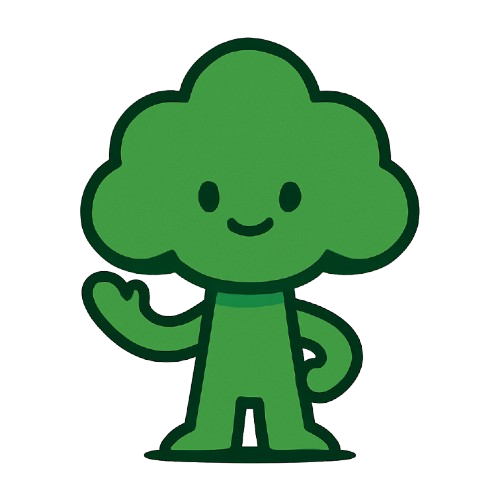

<!DOCTYPE html>
<html lang="id">
<head>
    <meta charset="UTF-8">
    <meta name="viewport" content="width=device-width, initial-scale=1.0">
    <title>JejakKu - Beranda</title>
    <!-- Tailwind CSS CDN -->
    <script src="https://cdn.tailwindcss.com"></script>
    <!-- Font Inter dari Google Fonts -->
    <link href="https://fonts.googleapis.com/css2?family=Inter:wght@400;500;600;700;800;900&display=swap" rel="stylesheet">
    <style>
        /* Terapkan font Inter ke seluruh elemen body dan pastikan tidak ada margin/padding default */
        body {
            font-family: 'Inter', sans-serif;
            margin: 0;
            padding: 0;
            box-sizing: border-box;
            transition: background-color 0.3s ease; /* Transisi untuk perubahan background body */
            scroll-behavior: smooth; /* Untuk smooth scrolling */
        }
    </style>
</head>
<body class="flex items-center justify-center min-h-screen p-4">
    <div id="app-root"></div>

    <script type="module">
        // Impor Firebase SDKs. Ini masih memerlukan type="module" karena menggunakan impor URL.
        import { initializeApp } from "https://www.gstatic.com/firebasejs/11.6.1/firebase-app.js";
        import { getAuth, signInAnonymously, signInWithCustomToken, onAuthStateChanged } from "https://www.gstatic.com/firebasejs/11.6.1/firebase-auth.js";
        import { getFirestore, doc, setDoc, getDoc } from "https://www.gstatic.com/firebasejs/11.6.1/firebase-firestore.js";

        // Fungsi render React-like sederhana untuk HTML
        function render(component) {
            const root = document.getElementById('app-root');
            if (root) {
                root.innerHTML = component;
                console.log("UI updated successfully."); // Log untuk debugging
                attachEventListeners(); // Panggil fungsi untuk melampirkan event listeners setelah rendering
            } else {
                console.error("Elemen 'app-root' tidak ditemukan."); // Log jika elemen tidak ditemukan
            }
        }

        // State management sederhana
        let isDarkMode = false; // State untuk mode gelap

        // Firebase states (tetap dipertahankan meskipun tidak digunakan langsung di UI index.html)
        let db = null;
        let auth = null;
        let userId = null;
        let isAuthReady = false;

        // Fungsi untuk memainkan efek suara
        function playSound(soundFile) {
            const audio = new Audio(soundFile);
            audio.play().catch(e => console.error("Error playing sound:", e));
        }

        // Fungsi untuk mengontrol mode gelap/terang
        function toggleDarkMode() {
            isDarkMode = !isDarkMode;
            localStorage.setItem('isDarkMode', isDarkMode); // Simpan state ke localStorage
            updateUI();
            playSound('sounds/toggle_click.mp3'); // Memainkan suara saat toggle
        }

        // Fungsi untuk melampirkan event listeners secara programatis
        function attachEventListeners() {
            // Event listener untuk tombol toggle dark mode
            document.getElementById('toggleDarkModeButton')?.addEventListener('click', toggleDarkMode);

            // Event listener untuk tombol "Mulai Hitung Jejak Karbon Anda!"
            document.getElementById('startCalculatorButton')?.addEventListener('click', () => {
                playSound('sounds/button_click.mp3'); // Memainkan suara saat tombol diklik
                window.location.href = 'calculator.html'; // Navigasi ke halaman kalkulator
            });

            // Event listeners untuk tombol scroll ke section
            document.getElementById('scrollToNetZero')?.addEventListener('click', () => {
                const targetElement = document.getElementById('net-zero-emission');
                if (targetElement) {
                    targetElement.scrollIntoView({ behavior: 'smooth' });
                    playSound('sounds/button_click.mp3');
                }
            });

            document.getElementById('scrollToPentingnyaEmisi')?.addEventListener('click', () => {
                const targetElement = document.getElementById('pentingnya-mengurangi-emisi');
                if (targetElement) {
                    targetElement.scrollIntoView({ behavior: 'smooth' });
                    playSound('sounds/button_click.mp3');
                }
            });

            document.getElementById('scrollToEnergiTerbarukan')?.addEventListener('click', () => {
                const targetElement = document.getElementById('solusi-energi-terbarukan');
                if (targetElement) {
                    targetElement.scrollIntoView({ behavior: 'smooth' });
                    playSound('sounds/button_click.mp3');
                }
            });

            // Handle scroll to section if hash exists in URL
            const hash = window.location.hash;
            if (hash) {
                const targetElement = document.querySelector(hash);
                if (targetElement) {
                    setTimeout(() => { // Small delay to ensure content is rendered
                        targetElement.scrollIntoView({ behavior: 'smooth' });
                    }, 100);
                }
            }

            console.log("Event listeners re-attached for index.html.");
        }

        // Fungsi untuk memperbarui UI berdasarkan state
        function updateUI() {
            // Muat state mode gelap dari localStorage saat pertama kali memuat UI
            const savedDarkMode = localStorage.getItem('isDarkMode');
            if (savedDarkMode !== null) {
                isDarkMode = JSON.parse(savedDarkMode);
            }

            // Tentukan kelas CSS berdasarkan mode gelap/terang
            const bodyBgClass = isDarkMode ? 'bg-gradient-to-br from-gray-950 to-gray-800' : 'bg-gradient-to-br from-emerald-50 to-blue-100';
            const cardBgClass = isDarkMode ? 'bg-gray-800' : 'bg-white';
            const textColorClass = isDarkMode ? 'text-gray-100' : 'text-gray-700';
            const subTextColorClass = isDarkMode ? 'text-gray-400' : 'text-gray-600';
            const buttonBgClass = isDarkMode ? 'bg-green-700 hover:bg-green-600' : 'bg-green-600 hover:bg-green-700';
            const buttonTextColorClass = 'text-white';
            const sectionBgClass = isDarkMode ? 'bg-gray-700' : 'bg-gray-50';
            const sectionBorderClass = isDarkMode ? 'border-gray-600' : 'border-gray-200';

            // Terapkan kelas latar belakang langsung ke elemen body
            const bodyElement = document.body;
            bodyElement.className = `flex items-center justify-center min-h-screen p-4 ${bodyBgClass}`;

            const appHtml = `
                <div class="${cardBgClass} p-6 rounded-2xl shadow-xl w-full max-w-2xl transform transition-all duration-300 hover:scale-[1.01] border ${isDarkMode ? 'border-gray-700' : 'border-gray-200'}">
                    <div class="flex items-center justify-between mb-6">
                        <h1 class="text-3xl sm:text-4xl font-extrabold ${isDarkMode ? 'text-emerald-400' : 'text-green-700'} drop-shadow-sm">
                            JejakKu
                        </h1>
                        <button id="toggleDarkModeButton" class="relative inline-flex items-center h-8 w-16 rounded-full transition-colors duration-300 focus:outline-none focus:ring-2 focus:ring-purple-500 ${isDarkMode ? 'bg-gray-700' : 'bg-green-500'}">
                            <span class="sr-only">Toggle dark mode</span>
                            <!-- Sun Icon -->
                            <svg class="absolute left-1 top-1 w-6 h-6 text-yellow-400 transition-opacity duration-300 ${isDarkMode ? 'opacity-0' : 'opacity-100'}" fill="currentColor" viewBox="0 0 24 24">
                                <path d="M12 17a5 5 0 1 0 0-10 5 5 0 0 0 0 10zm0 2a7 7 0 1 1 0-14 7 7 0 0 1 0 14zm0-12a1 1 0 0 1 1-1h2a1 1 0 0 1 0 2h-2a1 1 0 0 1-1-1zm0 10a1 1 0 0 1 1-1h2a1 1 0 0 1 0 2h-2a1 1 0 0 1-1-1zm6.364-10.364a1 1 0 0 1 0-1.414l1.414-1.414a1 1 0 0 1 1.414 0 1 1 0 0 1 0 1.414l-1.414 1.414a1 1 0 0 1-1.414 0zM5.636 18.364a1 1 0 0 1 0 1.414l-1.414 1.414a1 1 0 0 1-1.414 0 1 1 0 0 1 0-1.414l1.414-1.414a1 1 0 0 1 1.414 0zM12 0a1 1 0 0 1 1-1h2a1 1 0 0 1 0 2h-2a1 1 0 0 1-1-1zm0 24a1 1 0 0 1 1-1h2a1 1 0 0 1 0 2h-2a1 1 0 0 1-1-1zm-6.364-10.364a1 1 0 0 1 0-1.414l-1.414-1.414a1 1 0 0 1-1.414 0 1 1 0 0 1 0 1.414l1.414 1.414a1 1 0 0 1 1.414 0zM18.364 5.636a1 1 0 0 1 0 1.414l1.414 1.414a1 1 0 0 1 1.414 0 1 1 0 0 1 0-1.414l-1.414-1.414a1 1 0 0 1-1.414 0z"/>
                            </svg>
                            <!-- Moon Icon -->
                            <svg class="absolute right-1 top-1 w-6 h-6 text-blue-300 transition-opacity duration-300 ${isDarkMode ? 'opacity-100' : 'opacity-0'}" fill="currentColor" viewBox="0 0 24 24">
                                <path d="M12 2.25a9.75 9.75 0 0 0-9.75 9.75c0 5.385 4.365 9.75 9.75 9.75a9.75 9.75 0 0 0 9.75-9.75c0-5.385-4.365-9.75-9.75-9.75zm-6.25 9.75a6.25 6.25 0 0 1 6.25-6.25v12.5a6.25 6.25 0 0 1-6.25-6.25z"/>
                            </svg>
                            <!-- Thumb -->
                            <span class="absolute left-1 w-6 h-6 bg-white rounded-full shadow-md transform transition-transform duration-300 ${isDarkMode ? 'translate-x-8' : 'translate-x-0'}"></span>
                        </button>
                    </div>
                    
                    <p class="text-sm sm:text-base text-center ${subTextColorClass} mb-8 -mt-4">
                        Selamat datang di JejakKu! Pahami dampak lingkungan Anda dan temukan cara untuk berkontribusi pada Indonesia bebas emisi.
                    </p>

                    <div class="mb-8">
                        <p class="${textColorClass} text-base sm:text-lg mb-4 text-justify indent-8">
                            Perubahan iklim adalah tantangan global yang membutuhkan tindakan dari setiap individu. Jejak karbon adalah total emisi gas rumah kaca yang disebabkan oleh aktivitas kita. Dengan memahami jejak karbon Anda, Anda dapat mengambil langkah-langkah konkret untuk mengurangi dampak negatif terhadap lingkungan.
                        </p>
                        <p class="${textColorClass} text-base sm:text-lg mb-6 text-justify indent-8">
                            Aplikasi ini akan membantu Anda menghitung perkiraan jejak karbon bulanan Anda berdasarkan konsumsi listrik, kebiasaan transportasi, pengelolaan sampah, dan pola makan. Setelah itu, kami akan memberikan saran personalisasi tentang bagaimana Anda dapat mengurangi emisi dan berapa banyak pohon yang perlu Anda tanam untuk mengimbanginya.
                        </p>
                        <div class="text-center flex flex-col sm:flex-row gap-4 justify-center">
                            <a id="startCalculatorButton" href="calculator.html" class="inline-block bg-green-600 text-white font-bold py-3 px-8 rounded-lg shadow-lg transition-all duration-300 transform hover:scale-105 focus:outline-none focus:ring-2 focus:ring-green-500 focus:ring-opacity-75">
                                Mulai Hitung Jejak Karbon Anda!
                            </a>
                        </div>
                        <div class="text-center flex flex-col sm:flex-row gap-4 justify-center mt-4">
                            <button id="scrollToNetZero" class="inline-block bg-blue-600 text-white font-bold py-3 px-6 rounded-lg shadow-lg transition-all duration-300 transform hover:scale-105 focus:outline-none focus:ring-2 focus:ring-blue-500 focus:ring-opacity-75">
                                Net Zero Emission
                            </button>
                            <button id="scrollToPentingnyaEmisi" class="inline-block bg-blue-600 text-white font-bold py-3 px-6 rounded-lg shadow-lg transition-all duration-300 transform hover:scale-105 focus:outline-none focus:ring-2 focus:ring-blue-500 focus:ring-opacity-75">
                                Pentingnya Emisi
                            </button>
                            <button id="scrollToEnergiTerbarukan" class="inline-block bg-blue-600 text-white font-bold py-3 px-6 rounded-lg shadow-lg transition-all duration-300 transform hover:scale-105 focus:outline-none focus:ring-2 focus:ring-blue-500 focus:ring-opacity-75">
                                Energi Terbarukan
                            </button>
                        </div>
                    </div>

                    <div class="mt-8 pt-6 border-t ${isDarkMode ? 'border-gray-700' : 'border-gray-200'}">
                        <h3 class="text-xl sm:text-2xl font-bold ${textColorClass} mb-4 text-center">
                            Mengapa Jejak Karbon Penting?
                        </h3>
                        <ul class="list-disc pl-5 ${subTextColorClass} text-sm sm:text-base space-y-2">
                            <li><strong>Dampak Lingkungan:</strong> Emisi gas rumah kaca menyebabkan pemanasan global, yang berdampak pada perubahan iklim ekstrem, naiknya permukaan air laut, dan kerusakan ekosistem.</li>
                            <li><strong>Kesehatan Manusia:</strong> Polusi udara dari emisi dapat menyebabkan masalah pernapasan dan kesehatan lainnya.</li>
                            <li><strong>Ekonomi:</strong> Bencana alam yang diakibatkan perubahan iklim dapat menyebabkan kerugian ekonomi yang besar.</li>
                            <li><strong>Masa Depan:</strong> Mengurangi jejak karbon adalah investasi untuk masa depan yang lebih berkelanjutan bagi generasi mendatang.</li>
                        </ul>
                    </div>

                    <!-- Net Zero Emission Section -->
                    <section id="net-zero-emission" class="${sectionBgClass} p-6 rounded-xl shadow-md mt-8 border ${sectionBorderClass}">
                        <h3 class="text-xl sm:text-2xl font-bold ${textColorClass} mb-4 text-center">
                            Apa Itu Net Zero Emission?
                        </h3>
                        <p class="${textColorClass} text-base sm:text-lg mb-4 text-justify indent-8">
                            Net Zero Emission (NZE) atau Nol Emisi Bersih adalah kondisi di mana jumlah emisi gas rumah kaca yang dilepaskan ke atmosfer tidak lebih besar dari jumlah emisi yang dihilangkan dari atmosfer. Ini bukan berarti tidak ada emisi sama sekali, melainkan mencapai keseimbangan.
                        </p>
                        <ul class="list-disc pl-5 ${subTextColorClass} text-sm sm:text-base space-y-2">
                            <li><strong>Mengapa Penting?</strong>
                                <ul class="list-circle pl-4 space-y-1">
                                <li>Target NZE sangat penting untuk membatasi kenaikan suhu global di bawah 1.5°C, sesuai dengan tujuan Perjanjian Paris. Ini adalah kunci untuk mencegah dampak terburuk perubahan iklim.</li>
                                </ul>
                            </li>
                            <li><strong>Bagaimana Mencapainya?</strong>
                                <ul class="list-circle pl-4 space-y-1">
                                    <li>Pengurangan Emisi: Mengurangi penggunaan bahan bakar fosil, meningkatkan efisiensi energi, dan beralih ke energi terbarukan.</li>
                                    <li>Penyerapan Karbon: Melalui penanaman pohon (reforestasi dan aforestasi), serta teknologi penangkapan karbon.</li>
                                </ul>
                            </li>
                        </ul>
                    </section>

                    <!-- Pentingnya Mengurangi Emisi Section -->
                    <section id="pentingnya-mengurangi-emisi" class="${sectionBgClass} p-6 rounded-xl shadow-md mt-8 border ${sectionBorderClass}">
                        <h3 class="text-xl sm:text-2xl font-bold ${textColorClass} mb-4 text-center">
                            Pentingnya Mengurangi Emisi Karbon
                        </h3>
                        <p class="${textColorClass} text-base sm:text-lg mb-4 text-justify indent-8">
                            Mengurangi emisi karbon bukan hanya tanggung jawab pemerintah atau industri besar, tetapi juga setiap individu. Dampak dari emisi yang berlebihan sangat luas dan memengaruhi kita semua.
                        </p>
                        <ul class="list-disc pl-5 ${subTextColorClass} text-sm sm:text-base space-y-2">
                            <li><strong>Mencegah Perubahan Iklim Ekstrem:</strong> Mengurangi emisi membantu memperlambat pemanasan global, yang berarti lebih sedikit bencana alam seperti banjir, kekeringan, dan badai yang intens.</li>
                            <li><strong>Meningkatkan Kualitas Udara:</strong> Lebih sedikit emisi berarti udara yang lebih bersih, mengurangi risiko penyakit pernapasan dan kesehatan lainnya.</li>
                            <li><strong>Melindungi Keanekaragaman Hayati:</strong> Perubahan iklim mengancam banyak spesies. Dengan mengurangi emisi, kita membantu melindungi ekosistem dan satwa liar.</li>
                            <li><strong>Menciptakan Ekonomi Hijau:</strong> Transisi menuju energi bersih dan praktik berkelanjutan membuka peluang baru dalam pekerjaan dan inovasi.</li>
                            <li><strong>Menjaga Sumber Daya Alam:</strong> Mengurangi konsumsi dan emisi membantu melestarikan sumber daya alam untuk generasi mendatang.</li>
                        </ul>
                    </section>

                    <!-- Solusi Energi Terbarukan Section -->
                    <section id="solusi-energi-terbarukan" class="${sectionBgClass} p-6 rounded-xl shadow-md mt-8 border ${sectionBorderClass}">
                        <h3 class="text-xl sm:text-2xl font-bold ${textColorClass} mb-4 text-center">
                            Solusi Energi Terbarukan
                        </h3>
                        <p class="${textColorClass} text-base sm:text-lg mb-4 text-justify indent-8">
                            Energi terbarukan adalah kunci utama dalam mencapai Net Zero Emission. Sumber energi ini berasal dari proses alam yang berkelanjutan dan tidak akan habis.
                        </p>
                        <ul class="list-disc pl-5 ${subTextColorClass} text-sm sm:text-base space-y-2">
                            <li><strong>Energi Surya (Matahari):</strong> Menggunakan panel surya untuk mengubah cahaya matahari menjadi listrik. Ideal untuk rumah tangga dan industri.</li>
                            <li><strong>Energi Angin:</strong> Menggunakan turbin angin untuk menghasilkan listrik dari kekuatan angin. Efektif di daerah dengan angin kencang.</li>
                            <li><strong>Energi Hidro (Air):</strong> Pembangkit listrik tenaga air yang memanfaatkan aliran air untuk memutar turbin.</li>
                            <li><strong>Energi Panas Bumi (Geothermal):</strong> Memanfaatkan panas dari inti bumi untuk menghasilkan energi. Banyak potensi di Indonesia.</li>
                            <li><strong>Bioenergi:</strong> Energi yang dihasilkan dari biomassa (bahan organik seperti limbah pertanian, kotoran hewan, atau tanaman energi).</li>
                        </ul>
                        <p class="${textColorClass} text-base sm:text-lg mt-4 text-justify indent-8">
                            Beralih ke energi terbarukan tidak hanya mengurangi emisi, tetapi juga meningkatkan kemandirian energi dan menciptakan masa depan yang lebih bersih dan sehat.
                        </p>
                    </section>
                </div>
            `;
            render(appHtml);
        }

        // Inisialisasi Firebase dan tangani otentikasi
        document.addEventListener('DOMContentLoaded', async () => {
            // Muat state mode gelap dari localStorage saat pertama kali memuat UI
            const savedDarkMode = localStorage.getItem('isDarkMode');
            if (savedDarkMode !== null) {
                isDarkMode = JSON.parse(savedDarkMode);
            }
            updateUI(); // Render UI awal

            try {
                // Dapatkan ID aplikasi dan konfigurasi Firebase dari variabel global
                const appId = typeof __app_id !== 'undefined' ? __app_id : 'default-app-id';
                const firebaseConfig = typeof __firebase_config !== 'undefined' ? JSON.parse(__firebase_config) : {};

                // Inisialisasi aplikasi Firebase
                const app = initializeApp(firebaseConfig);
                db = getFirestore(app);
                auth = getAuth(app);

                // Dengarkan perubahan status otentikasi
                onAuthStateChanged(auth, async (user) => {
                    if (user) {
                        userId = user.uid;
                    } else {
                        try {
                            if (typeof __initial_auth_token !== 'undefined' && __initial_auth_token) {
                                await signInWithCustomToken(auth, __initial_auth_token);
                                userId = auth.currentUser?.uid;
                            } else {
                                await signInAnonymously(auth);
                                userId = auth.currentUser?.uid || crypto.randomUUID();
                            }
                        } catch (error) {
                            console.error("Error selama masuk Firebase:", error);
                            userId = crypto.randomUUID();
                        }
                    }
                    isAuthReady = true;
                    updateUI(); // Perbarui UI setelah otentikasi siap
                });
            } catch (error) {
                console.error("Gagal menginisialisasi Firebase:", error);
                userId = crypto.randomUUID();
                isAuthReady = true;
                updateUI();
            }
        });
    </script>
</body>
</html>
